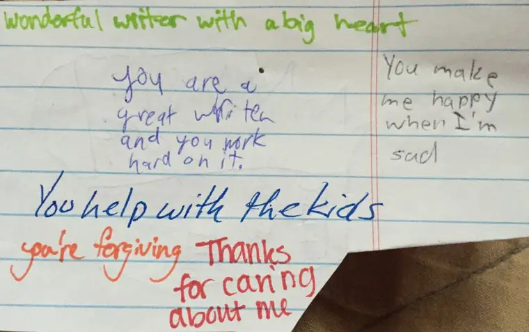
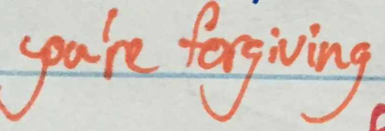

It was a simple project, led by our youngest son working on a requirement for a Cub Scouts Webelos activity.
The instructions: to create paper “treasure chests” for the whole family, write something on each chest that you treasure about that individual, and have them do the same in kind.
It seemed simple enough, but anyone who has teenagers or a larger family knows that getting everyone together for a “simple” family activity can become a monumental task.
I’d texted the older kids earlier in the day to let them know it was going to happen. Our youngest was a bit squeamish about the whole thing, feeling a little embarrassed to ask this of his older siblings, wondering, I’m sure, how they’d react. He didn’t want them to think it was dumb.
One of the older ones had forgotten about my text request, but agreed to come home to join the rest of us for this mystery activity. I’d explained that it wouldn’t take up too much time but we really wanted our whole family there.
A few moans erupted from the peanut gallery, but in short order, the seven of us were gathered in the living room in a circle. Still shy-faced, our youngest set about verbalizing what was expected. Each person would see the treasure he’d written, and then they were to pass their treasure to the next person, until everyone had written something valuable from their perspective about everyone else.
We would then receive our treasure chests back and read them aloud.

Surprisingly, it went fairly smoothly with no eye-roll activity detected. I was last to read mine and I did so fairly quickly, lest the tear ducts be provoked. The project seemed well-received and I prayed that everyone had taken these things into their hearts as I knew I would, realizing perhaps that despite the messiness of our lives together, we can still can find it within ourselves to say something good about each other. Deep down, there is love in this home.
I don’t think we do this enough — stop to say good things to those in our families or close circles. It’s easier to say nice things to strangers than those with whom we rub shoulders, elbows and knees, and share bathrooms in the morning.
At bedtime, I found the sheet on my nightstand and decided to take a more thoughtful look at what had been said about me, now that I wasn’t on cue. This time, I intentionally placed the handwriting to the person who wrote it — something that had not been completed in our living-room session.
That’s when I saw it — really saw it. Yes, I’d read it before, but somehow, the depth of it had gotten past me. But now, it was like a neon light flashing at me from the depths of my child’s heart.

As I reviewed the words that had been said to describe the reason this person most appreciates me, I felt overwhelmed with gratitude and joy. Because while I am glad my kids see that I work hard on my writing, and while I am glad I’m appreciated in other ways, this was on a slightly different plane. This wasn’t about what I do each day to try to keep our family running smoothly — laundry, toting kids around, managing schedules. This was about something deeper. And it surprised me.
In this Year of Mercy, I can think of nothing more meaningful than to know that one of my children sees this in me. I know it’s even more touching to me given the individual who wrote it — one of the older children who has been around a while and seen me at my worst, perhaps a few times more than the others. And yet…this is what stood out.
But it’s not just about me. In reading these words, I also saw into this child’s heart in a new way, and that, too, moved me. For in them, I see a glimmer of hope for this child that, while present before, just grew a bit larger.
From the outside, it might be hard to grasp what I’m trying to convey, without knowing more particulars. But God knows, and I know that God is celebrating with me over this little…this big…treasure.
I’m going to be holding this close for a while — two words in orange Sharpie that told me that though I’ve gotten a lot wrong through the years, maybe I’ve gotten a few things right, too.
Pondering these words only makes me want to live up to this impression all the more. It makes me want to continue being this to this child, and others. I’m not sure exactly what brought these words forth from the depths of my child’s heart, but I believe they are sincere, and have every reason to see them as a miracle.
Q4U: When has the impression others have of you made you want to be an even better person?